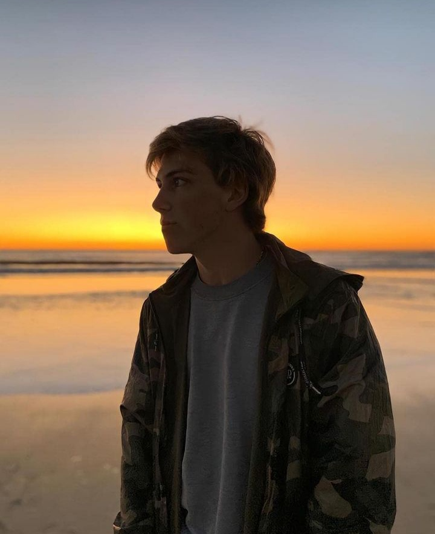

Burberry es una casa británica de moda de lujo, fabricante de ropa
y otros complementos.
Se trabajo un home principal
en el que primero ingresa un pais y redirecciona hacia la web de compra de ese pais. Doloremque ratione quae repellendus amet officia quisquam quod, enim accusamus
consequuntur iure autem, vero illo
excepturi explicabo nisi dolor iste voluptatum doloribus.
Ian Vuconich
Fronted Junior Developer
Estudiante Universitario de UADER.
Actualmente en la carrera de Licenciatura en Sistemas.
Conocimientos en HTML, CSS, JavaScript.
Uso de frameworks como React, Angular y jQuery.
Residiendo en Concepción del Uruguay.

Proyectos
SNKRS, de Nike, es una plataforma dedicada exclusivamente a la venta de
las mejores zapatillas de Converse, Nike y Jordan brand.
Meses de trabajo resulto en una web donde se pueden ver los futuros lanzamientos de la marca
adipisicing elit. Doloremque ratione quae repellendus amet officia quisquam quod, enim accusamus
consequuntur iure autem, vero illo

"Un verano sin ti" es el quinto álbum de estudio en solitario del cantante puertorriqueño Bad Bunny.
Fui contratado por
el staff de Bad Bunny, para crear una pagina web de venta de merch con worldwide shipping, doloremque ratione quae repellendus amet officia quisquam quod, enim accusamus
consequuntur iure autem, vero illo
excepturi explicabo nisi dolor iste voluptatum doloribus.